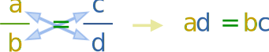

Cross Multiply
To cross multiply is to go
8 12 = 2 3
8 × 3 = 12 × 2
How Does it Work?
Multiplying the top and bottom of a fraction by the same amount doesn't change its value.
Step 1: Multiply the top and bottom of the first fraction by the bottom number of the second fraction.
8 × 3 12 × 3 = 2 3
Step 2: Multiply the top and bottom of the second fraction by the bottom number that the first fraction had.
8 × 3 12 × 3 = 2 × 12 3 × 12
And Magic! The bottom of both fractions is now 12 × 3
Step 3: We can get rid of the 12 × 3 (as we are dividing both sides by the same amount) and the equation is still true:
8 × 3 = 12 × 2
Job Done!
In practice, though, it is easier to skip the steps and go straight to the "cross-multiplied" form.
Using Variables
The general case, using variables instead of numbers, is:
To remember think cross (x) multiply:

Cross multiplication can help speed up a solution. Like in this example:
Example: Find "x" in x 8 = 2 x
Check: Does 4 8 = 2 4 and −4 8 = 2 −4 ?
Terminology

I said "top" and "bottom" of the fractions ... but the correct words are numerator and denominator, OK? (I just wanted to keep it simple.)
Caution: Zero
Be careful, though!
We cannot use it when a denominator ("b" and "d" above) is zero, as dividing by zero is "illegal".